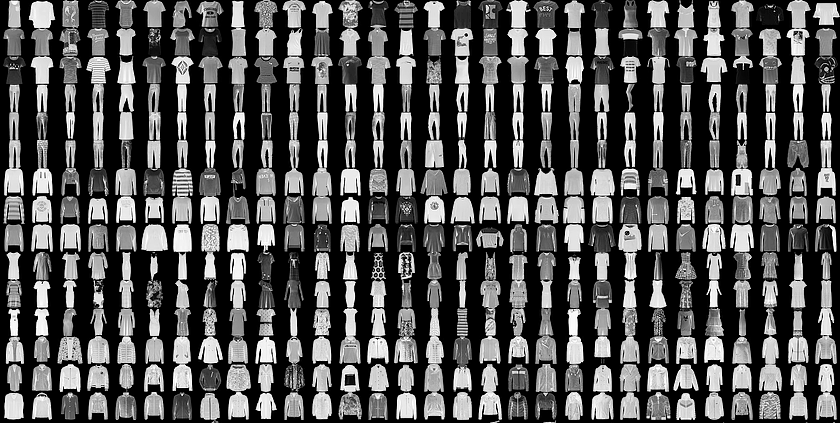

Guild AI introduction
This introduction provides an overview of Guild AI core functionality. Feel free to follow the steps under each Example section below to get hands-on experience with Guild. The examples implement the Keras image classifier described in TensorFlow’s Train your first neural network: basic classification. Refer to the completed project for the full example.

Before running any of the steps below, first install Guild AI.
Guild projects
A Guild project is a standard TensorFlow or Keras source code project
that contains a file named guild.yml in the root directory. We refer
to guild.yml as a project Guild file.
Guild files supplement TensorFlow and Keras projects. You often don’t need to modify your project source files to take advantage of Guild features.
Guild files are YAML formatted files that define models, model operations, resources, and packages.
Example
In this example, we create a Guild project skeleton to illustrate the basics of model definition and discovery.
Start by creating a project directory:
mkdir sample-project
Create a file sample-project/guild.yml and modify it to be:
- model: fashion
description: Basic Fashion-MNIST image classifier.
Save your changes to guild.yml. Confirm that the project structure
is:
- sample-project
- guild.yml
Change to the project directory and list the project models:
cd sample-project
guild models
Guild displays the project models:
./fashion Basic Fashion-MNIST image classifier.
Guild models represent the TensorFlow or Keras models in your project. In the examples that follow, we fill in details to create a fully functional classifier for the Fashion-MNIST dataset.
Model operations
Model operations automate model related tasks. A common operation is
train, which trains a model from scratch. As we’ll see later in this
introduction, operations can be any task that you want to
automate. These may include:
prepare-datatransfer-learnfinetuneevaluatequantizepredictserveYou’re free to define the operations that suit your model—Guild does not prescribe the operations a model may support.
Once an operation is defined for a model, you can run it using the run command. As we’ll see in the next section, each operation run is tracked as a separate experiment.
Example
If you are following the examples, in this section we add a train
operation to our model and run it as an experiment.
Modify guild.yml to be:
- model: fashion
description: Basic Fashion-MNIST image classifier.
operations:
train:
description: Train classifier from scratch.
main: train
Here we add a train operation with a description and a main module.
Save your changes to guild.yml.
Use the operations command to list available operations:
guild operations
Tip
You can use ops as a short cut to the operations command. We use
ops through the remained of this introduction.
Guild displays the newly added train operation:
./fashion:train Train classifier from scratch.
You can view help for the project using the help command:
guild help
Guild automatically generates help from the Guild file. This information is useful for working with the project, especially as it becomes more complex over time.
Next, run the operation:
guild run train
Press Enter to confirm the operation.
Tip
You can use -y with the run command to bypass the
prompt. E.g. guild run -y train runs the operation
without prompting.
The command fails with the message:
guild: No module named train
That’s okay! We expect this error because our project is indeed
missing the train module.
Guild operations are implemented using Python main modules—i.e. Python modules that can be executed as a program (see Python help for details). This means that any Python script can be used for a Guild model operation.
Let’s create the missing module.
Download train.py
and save it to the project directory. If you have wget installed,
you can download the file directly to the project directory by
running:
wget https://raw.githubusercontent.com/guildai/examples/master/fashion/train.py
Confirm that the project structure is now:
- sample-project
- guild.yml
- train.py
The train module uses Keras to train a simple image classifer. The
module is derived from the TensorFlow getting started
tutorial
and requires a few additional Python packages:
- matplotlib
- h5py
- numpy
Install those packages now:
pip install matplotlib h5py numpy
Now that train.py is available, along with its required Python
packages, run the operation again:
guild run train
Press Enter to confirm the operation.
Guild runs the train operation by executing train (the module
defined in sample-project/train.py) as a program—the operation is
implemented entirely by that module.
Experiments
Guild tracks each operation run as an isolated experiment using run directories. Files generated by a run are written to a unique directory and can be accessed as normal files.
Guild provides extensive support for managing and using runs:
- Show run information, including metadata, files, and output
- List by operation, status, and label
- Delete, restore, and purge
- Export and import
- Tag with custom labels
- Push to and pull from remote environments
- Compare run performance
- Diff run metadata, files, and output
For more information on managing runs, see Runs.
Example
If you are following the examples, in this section we use Guild’s run management facility to examine the runs generated in the previous example.
First, fist available runs:
guild runs
Guild displays the runs so far. You should see two (dates and IDs will differ):
[1:19c67a72] ./fashion:train 2018-10-16 15:57:32 completed
[2:1451e20c] ./fashion:train 2018-10-16 15:57:23 error
The latest run (listed first) should have a status of completed,
indicating that the operation exited without an error. The prior run
(listed second) should have a status of error because the train
module was not originally available (see previous section).
Next, show output for the failed run:
guild run info --output 2
The option --output tells Guild to include run output. The value
2 tells Guild to show information for the run with index 2 (see
listing above).
You should see information for the failed run (dates and IDs will differ):
id: 1451e20cd18611e88f52d017c2ab916f
operation: ./fashion:train
status: error
started: 2018-10-16 15:57:23
stopped: 2018-10-16 15:57:23
run_dir: ~/.guild/runs/1451e20cd18611e88f52d017c2ab916f
command: /usr/bin/python -um guild.op_main train
exit_status: 1
pid:
output:
guild: No module named train
Note the error message in the output. This information is retained as a part of the tracked experiment.
Next, delete the failed run—we don’t need it:
guild runs rm 2
As with the runs info command, the value 2 is a reference to the
second run in the list.
Guild prompts you before deleting the run. Press Enter to
confirm. After deleting the run, you can verify that it was deleted by
running guild runs.
If you make a mistake and delete a run by accident, you can restore it using runs restore.
Next, view the files generated by the successful run:
guild ls
We can omit a reference to the run in this case—Guild assumes you want to show files for the latest run.
Guild show these file (IDs and timestamps will differ):
~/.guild/runs/7d230c98d20811e88f52d017c2ab916f:
events.out.tfevents.1539779455.local
weights-0001-13.233.hdf5
weights-0002-13.080.hdf5
weights-0003-13.031.hdf5
weights-0004-12.996.hdf5
weights-0005-13.007.hdf5
These are the log file and trained model weights. Guild tracks these files along with all other run related metadata.
Tip
By default ls shows relative file paths. You can show full
paths by including the -f option. This is useful if you need to
access a particular file on the file system.
Guild provides a number of commands to help you view and understand
runs. Try running any of these from the sample-project directory:
guild viewguild tensorboardguild runs infoguild runs info --help for a
list of additional options).guild open